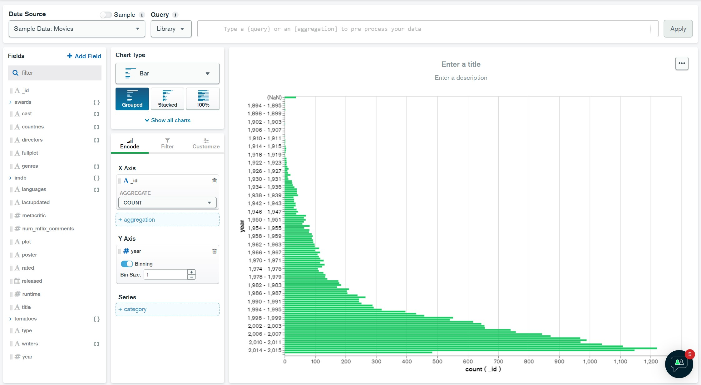

MongoDB Charts
MongoDB Charts எளிய, உள்ளுணர்வு வழியில் உங்கள் தரவை காட்சிப்படுத்த உங்களை அனுமதிக்கிறது.
MongoDB Charts அமைப்பு
MongoDB Atlas டாஷ்போர்டில் இருந்து, Charts தாவலுக்குச் செல்லவும்.
நீங்கள் இதற்கு முன்பு Charts ஐப் பயன்படுத்தியிருக்கவில்லை என்றால், Activate Now பொத்தானைக் கிளிக் செய்யவும். இது முடிக்க சுமார் 1 நிமிடம் எடுக்கும்.
நீங்கள் ஒரு புதிய டாஷ்போர்டைக் காண்பீர்கள். அதைத் திறக்க டாஷ்போர்ட் பெயரைக் கிளிக் செய்யவும்.
விளக்கப்படத்தை உருவாக்குதல்
Add Chart பொத்தானைக் கிளிக் செய்வதன் மூலம் ஒரு புதிய விளக்கப்படத்தை உருவாக்கவும்.
காட்சி ரீதியாக ஒரு விளக்கப்படத்தை உருவாக்குவது உள்ளுணர்வு. நீங்கள் பயன்படுத்த விரும்பும் தரவு மூலங்களைத் தேர்ந்தெடுக்கவும்.
எடுத்துக்காட்டு:
இந்த எடுத்துக்காட்டில், நாங்கள் "sample_mflix" தரவுத்தளத்தைப் பயன்படுத்துகிறோம், இது ஒருங்கிணைப்புகள் அறிமுகப் பிரிவில் இருந்து எங்கள் மாதிரி தரவில் இருந்து ஏற்றப்பட்டது.
ஒவ்வொரு ஆண்டும் வெளியிடப்பட்ட திரைப்படங்களின் எண்ணிக்கையுடன் ஒரு பட்டை விளக்கப்படத்தை இப்போது நீங்கள் காண வேண்டும்.
குறிப்பு:
MongoDB Charts பல்வேறு வகையான விளக்கப்படங்களை வழங்குகிறது - பட்டை விளக்கப்படங்கள், வரி விளக்கப்படங்கள், பை விளக்கப்படங்கள், சிதறல் விளக்கப்படங்கள் மற்றும் பல. நீங்கள் உருவாக்கிய விளக்கப்படங்களை டாஷ்போர்டுகளில் உட்பொதிக்கலாம் அல்லது பகிரலாம்.
விளக்கப்பட எடுத்துக்காட்டு
கீழே உள்ள படம் MongoDB Charts ஐப் பயன்படுத்தி உருவாக்கப்பட்ட பட்டை விளக்கப்படத்தின் எடுத்துக்காட்டைக் காட்டுகிறது:

விளக்கம்:
இந்த விளக்கப்படம் ஒவ்வொரு ஆண்டும் எத்தனை திரைப்படங்கள் வெளியிடப்பட்டன என்பதைக் காட்டுகிறது. X-அச்சு ஆண்டுகளைக் காட்டுகிறது, Y-அச்சு அந்த ஆண்டில் வெளியிடப்பட்ட திரைப்படங்களின் எண்ணிக்கையைக் காட்டுகிறது. இது திரைப்படத் தொழிலின் வளர்ச்சி முறைகளைப் புரிந்துகொள்ள உதவுகிறது.